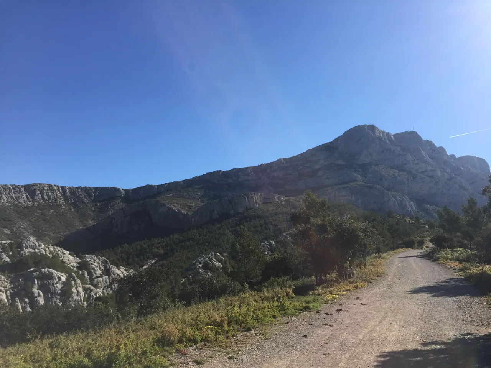

{kind=link}
관광·미술관
Nous avons déjà des billets.
이미 표가 있습니다.
누 자봉 데자 데 비예

폴 세잔이 생애 동안 유화 44점과 수채화 43점 등 80회 이상 반복해서 화폭에 담았던 프로방스의 영산(靈山), 생트 빅투아르 산(Montagne Sainte-Victoire, 해발 1,011m)을 화가의 정확한 시선에서 조망할 수 있는 야외 전망 공원이다.
로브 아틀리에에서 북쪽으로 약 800m 떨어진 언덕 정상에 위치하며, 세잔이 매일 아침 화구를 짊어지고 올라와 이젤을 세웠던 자리에 9점의 대표작 세라믹 복제 패널이 세워져 있다.
자연을 원기둥, 구, 원뿔의 기본 기하학적 형태로 환원하여 바라보았던 세잔의 회화 혁명이 거대한 백색 석회암 암벽과 푸른 소나무 숲, 붉은 황토밭 사이에서 어떻게 탄생했는지를 현장에서 생생하게 목격할 수 있다.
"그림 속 캔버스와 실제 자연의 지형이 완벽하게 포개어지는 순간을 체험하는 장소다." 아틀리에에서 세잔의 작업 도구와 붓을 본 직후 이곳으로 걸어 올라와 복제 화판 너머로 실제 생트 빅투아르 산을 겹쳐 보아야 한다. 산에 직접 오르지 않고도 세잔이 평생을 바쳐 구축한 '풍경의 건축학'을 가장 직관적으로 이해할 수 있는 엑상프로방스 최고의 야외 관람 포인트다.
| 운영시간 | 공식 출처 미확보 — 재확인 필요 재확인 |
|---|---|
| 휴무 | 공식 페이지에서 휴무 정보 확인 실패 — 현재 명칭 Jardin des Peintres, 무료 개방으로 알려져 있으나 공식 출처 미확보 재확인 |
| 요금 | 무료 |
| 예약 | 공식 출처 미확보 — 재확인 필요 재확인 |
| 항목 | 상세 정보 |
|---|---|
| 위치 | 49 Chemin de Beauregard, 13090 Aix-en-Provence |
| 운영/요금 | 연중 24시간 상시 개방 / 무료 |
| 접근 방법 | Atelier de Cézanne에서 북쪽으로 도보 10~12분 (약 800m, 오르막 계단 및 도로) / 엑상 도심에서 버스 Ligne 5 ('Terrain des Peintres' 정류장 하차) |
| 편의시설 | 벤치 및 전망 테라스 완비 (화장실 및 매점 없음, 식수 지참 권장) |
| 스케치/사진 팁 | 오후 늦은 시간 서향광일 때 산 표면의 음영이 극대화되어 가장 입체감 있는 사진과 스케치가 가능함 |
🎨 코스 추천:
Atelier de Cézanne관람(45분) → 도보 이동(10분) →Terrain des Peintres조망 및 스케치(30~40분)로 이어지는 총 90분 동선이 가장 이상적인 세잔 테마 코스입니다.
Nous avons déjà des billets.
이미 표가 있습니다.
누 자봉 데자 데 비예
On peut prendre des photos ?
사진 찍어도 되나요?
옹 푀 프랑드르 데 포토
Où commence la visite ?
관람은 어디서 시작하나요?
우 코망스 라 비지트

폴 세잔이 생의 마지막 4년(1902–1906) 동안 매일 그림을 그렸던 언덕 위 아틀리에. 북향 채광창, 대형 캔버스용 벽 슬릿, 정물화에 등장했던 올리브 단지와 해골이 그대로 보존된 근대 미술의 성지.

폴 세잔이 20세부터 60세까지 40년간 머물며 화가로 성장했던 가문의 여름 저택. 살롱의 초기 벽화, 마로니에 가로수길, 분수 연못, 그리고 화가가 최초로 생트 빅투아르 산을 그렸던 역사적 현장.

마르세유와 카시스 사이에 걸쳐 20km에 걸쳐 펼쳐진 유럽 유일의 지중해 연안 국립공원. 에메랄드빛 바다로 수직 낙하하는 백색 석회암 피오르 협만들의 장관.

엑상프로방스 건축물의 황금빛 사암을 공급하던 고대·중세 채석장. 직각으로 깎인 붉은 사암 절벽과 소나무 숲 사이에서 세잔이 큐비즘의 기하학적 구도를 태동시켰던 야외 작업장.

유럽 최고 높이의 해안 절벽 캅 카나유(Cap Canaille) 아래 자리한 아늑한 지중해 어항. 파스텔톤 가옥, 칼랑크 국립공원 유람선 출발지, 유서 깊은 카시스 화이트 와인(AOC Cassis)의 고향.

1651년 옛 성벽 자리에 조성된 440m의 플라타너스 가로수길. 북쪽의 활기찬 카페와 남쪽의 고요한 17세기 귀족 저택, 4개의 유서 깊은 분수가 관통하는 엑상프로방스의 심장.